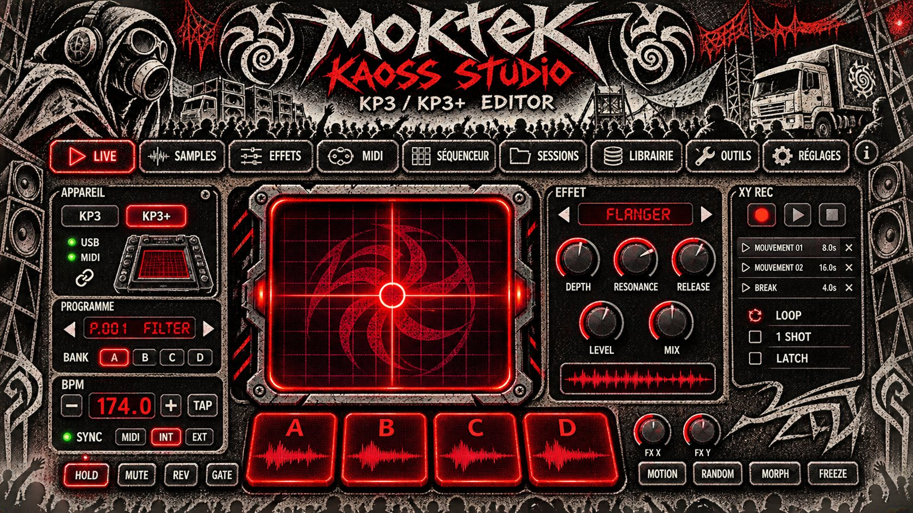

Le Kaoss Pad, autrement.
Un éditeur Android indépendant pour KP3 et KP3+, créé en soutien à mokteK. Une identité inspirée de la free party, du sound system et de la tribe.
Télécharger l’APKEssayer la démo interactiveDirection artistique

Maquette conceptuelle : les fonctions avancées représentées ne sont pas toutes présentes dans la V11. La démo HTML présente la V1 historique, sans connexion matérielle. L’APK V11 utilise une interface scène native Kotlin / Jetpack Compose.
Live
Pad XY, banques A–D, paramètres MIDI et tempo local.Motion
Enregistrement et répétition des gestes XY.Sessions
Enregistrement local des réglages et mouvements.Sample Studio
Import WAV PCM 16 bits, forme d’onde réelle, sélection, écoute en boucle et export WAV.V17 — Identification MIDI
Depuis MIDI / USB > Transfer Center, sélectionnez une interface et utilisez « Demander l’identité MIDI » pour envoyer uniquement la requête standard F0 7E 7F 06 01 F7. Les réponses reçues et les identifiants Korg apparaissent dans le journal exportable. Une identité Korg ne confirme pas à elle seule KP3 ou KP3+ : la validation du modèle précis reste à faire sur du matériel réel. Aucune écriture de samples ni de programmes physiques n’est possible dans cet écran.
Windows — mokteK Kaoss Studio
Une interface PC reprenant les couleurs, le pad XY et les commandes de l’APK. Le MIDI matériel est expérimental ; les fonctions avancées Android arriveront progressivement.
Télécharger Windows (.exe) Compilations WindowsInstallation et connexion
Télécharger l’APK depuis GitHub Releases, ouvrir le fichier et autoriser temporairement l’installation depuis le navigateur si Android le demande. Android 6 ou supérieur.
Brancher le KP3 alimenté à un adaptateur OTG. Dans MIDI / USB, actualiser puis sélectionner un port. Les sessions de la V1 ne sont pas automatiquement importées dans la V11. Régler le canal comme sur le KP3. Si aucun port n’est disponible, essayer une interface USB-MIDI class compliant avec sa sortie DIN vers MIDI IN du KP3. Vérifier les filtres MIDI de la machine.
Nouveau en V13 — MIDI & Global
Profils de transmission locaux séparés pour KP3 et KP3+, choix du canal MIDI, affectation des CC X/Y/Touch/Depth/Level/Hold et filtres locaux pour CC, notes et changements de programme. Aucun paramètre interne des machines n’est modifié par cette version ; le transfert SysEx reste à développer.
État du projet
V15 native expérimentale avec panneaux métalliques, mode scène et commandes XY / Motion réunies : pas encore validée sur matériel, simulation Live sans son, pas de transfert de samples ni de lecture des réglages matériels. Le Sample Studio permet une édition locale WAV PCM 16 bits. Sound Lab : gain, normalisation, inversion, fondus, estimation du tempo et générateur de kicks. Synth Factory : six moteurs de synthèse, sept presets intégrés, presets personnels, réglages de couleur, saturation, hauteur et durée. Génération mono locale avec export WAV. Le transfert matériel reste à développer.
Versions et téléchargementsV9 — Tribe Sequencer
Six pistes, 16 à 64 pas, tempo, niveaux, lecture locale et export WAV. Le menu ⋮ en haut de chaque écran exporte la capture réelle de la zone visible et un diagnostic technique en ZIP. Vérifiez la capture avant de la partager. Les images conceptuelles ci-dessus ne sont pas des captures de la V11.
V11 — Ergonomie Live
Pad XY et banques prioritaires en portrait, navigation sans défilement horizontal, commandes compactes et barres système sombres. Le menu ⋮ permet de capturer l’écran courant. Rendu à valider sur téléphone.
Sample Librarian V11
Quatre banques locales A–D, import WAV, copie et échange, BPM descriptif, huit slices activables, préécoute Loop / One Shot et export WAV. Aucun transfert matériel dans cette version.
V13 — Program Memory
Huit mémoires locales par modèle, noms personnalisables et rappel des réglages Live. Envoi manuel du Program Change pour les indices MIDI 0–127. Pas de lecture ni écriture des mémoires physiques Korg.
V14 — Korg File Center
Importation et conservation sans modification des fichiers de référence Korg et audio, contrôle SHA-256, export identique, sauvegarde ZIP des données locales mokteK, restauration après confirmation avec copie de secours. Les fichiers propriétaires Korg ne sont pas encore décodés, ni envoyés vers les machines : ne pas présenter cette sauvegarde mokteK comme un fichier All Data Korg.
V15 — Transfer Center (diagnostic non destructif)
Nouvel écran accessible par MIDI / USB ou Sessions. Détection des ports MIDI sortants du périphérique, écoute des messages entrants, journal hexadécimal borné et export TXT. Aucune commande SysEx de sauvegarde ou de restauration matérielle n’est envoyée. Un port visible ne prouve pas la compatibilité du protocole propriétaire KP3 / KP3+.
V17 — Backup Center
Sauvegarde locale étendue aux patterns du séquenceur et presets Synth Factory, en plus des banques WAV, sessions et fichiers Korg de référence. Inventaire avant export, contrôle SHA-256 de l’archive et restauration compatible avec les anciennes sauvegardes V14. Les valeurs numériques des paramètres sont conservées avec leur type. Attention : ne sauvegarde pas la mémoire interne du KP3/KP3+ et ne remplace pas les exports WAV des éditions audio non enregistrées.
Windows V3 — Sample Studio
La version PC propose désormais un éditeur WAV PCM 16 bits : forme d’onde, découpe, inversion, normalisation, écoute et export WAV. Les samples restent locaux au PC ; aucun transfert vers la mémoire du KP3 / KP3+ n’est effectué.
Windows V4 — Sample Librarian
Quatre banques A–D et huit emplacements par banque : import WAV PCM 16 bits, préécoute, copie, échange, export, BPM descriptif et stockage local. Aucun transfert des samples vers la mémoire du KP3 ou KP3+.
Windows V5 — Synth Factory
Sept presets et six moteurs de synthèse locaux : kicks, basses, leads et effets. Réglages de fréquence, durée, volume, distorsion et couleur, visualisation de la forme d’onde, préécoute et export WAV PCM 16 bits importable dans Sample Librarian. Aucun transfert matériel vers KP3/KP3+.
Windows V6 — Tribe Sequencer
Séquenceur local six pistes sur 16, 32 ou 64 pas, presets Tribe, Jungle, Gabber et Breakcore, sons Synth Factory, préécoute audio WAV, export WAV et sauvegarde de patterns JSON. Aucune écriture vers les appareils Korg.
Windows V7 — Mixer & Swing
Séquenceur 6 pistes avec Mute/Solo, volumes individuels, swing 0–75 %, sources Synth Factory ou samples WAV du Sample Librarian, export WAV et sauvegarde JSON compatible V6. Aucune écriture vers les appareils Korg.
Windows V8 — Patterns avancés
Éditeur avancé de pas : vélocité, probabilité, roulements 1–4, enchaînement de patterns A–D et export WAV. Sauvegarde JSON V8 compatible V6/V7. Aucun transfert matériel Korg.